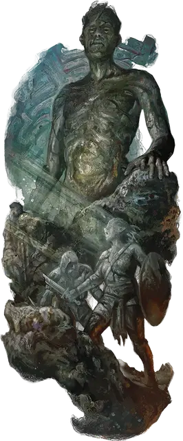

Надгробное умертвие
Cairnwight
Огромная Нежить, обычно нейтральная

Класс Доспеха 19 (природный доспех)
Хиты 138 (12к12 + 60)
Скорость 40 футов
| мод | спас | ||
|---|---|---|---|
| СИЛ | 23 | +6 | +6 |
| ЛОВ | 10 | +0 | +0 |
| ТЕЛ | 21 | +5 | +9 |
| мод | спас | ||
|---|---|---|---|
| ИНТ | 10 | +0 | +0 |
| МДР | 12 | +1 | +5 |
| ХАР | 9 | −1 | −1 |
Навыки Атлетика +10, Восприятие +5, Скрытность +8
Иммунитет к состояниям испуг, истощение, окаменение, очарование
Чувства тёмное зрение 60 футов, пассивное Восприятие 15
Языки Великаний
Опасность 9 (5000 опыта)
Бонус мастерства +4
Действия
Мультиатака. Надгробное умертвие совершает две атаки Ударом или Камнем и использует Касание окаменения, если оно доступно.
Удар. . Рукопашная атака оружием: +10 к попаданию, досягаемость 10 футов, одна цель. Попадание: 22 (3к10 + 6) дробящего урона.
Камень. . Дальнобойная атака оружием: +10 к попаданию, дистанция 60/240 футов, одна цель. Попадание: 19 (3к10 + 6) дробящего урона. Если цель — существо, она должны преуспеть в спасброске Силы Сл 17, иначе будет сбита с ног.
Касание окаменения (перезарядка 5-6). Великан касается одного существа, находящегося в пределах 10 футов. Цель должна совершить спасбросок Телосложения Сл 17, иначе получит 26 (4к12) урона силовым полем и начинает превращаться в камень и становится опутанным. Опутанное существо должно повторить спасбросок в конце своего следующего хода, становясь окаменевшим при провале или оканчивая эффект при успехе.
Описание
Каменные великаны верят, что бог Скориус Камнекост вдохновляет художников на создание их тончайшей резьбы по камню. Иногда великан преследует это божественное вдохновение, забывая обо всех других задачах, удаляясь в просторную пещеру и изолируясь от всех отвлекающих факторов. Создание шедевра может стать настолько навязчивой идеей, что смерть не сможет остановить его: великан, умирающий при создании произведение искусства, может воскреснуть в виде надгробного умертвия и продолжить работу. Как только произведение искусства будет завершено, надгробное умертвие останется его бессмертным хранителем.
Надгробное умертвие очень похож на изможденного каменного великана. Его тело покрыто лишайниками и минеральными отложениями, которые помогают ему сливаться со своей пещерной гробницей. Если существо попытается помешать завершению проекта надгробного умертвия, повредить произведения искусства или похитить его, то великан обращает существо в камень, выставляет получившуюся статую снаружи в качестве предупреждения, после чего вновь удаляется в свою пещеру.